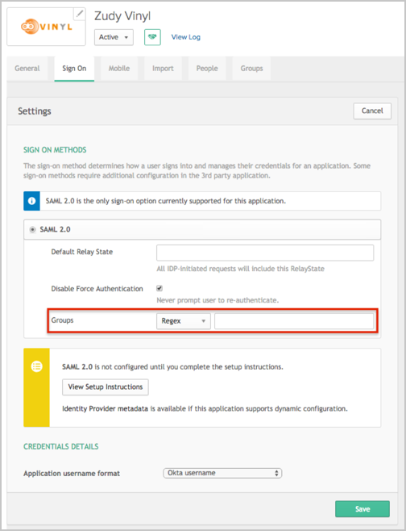
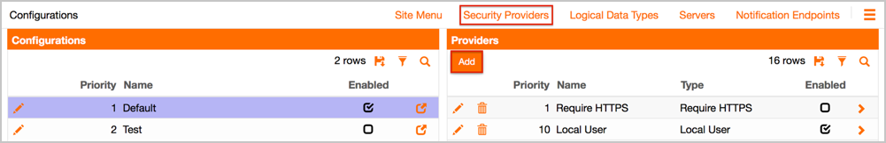
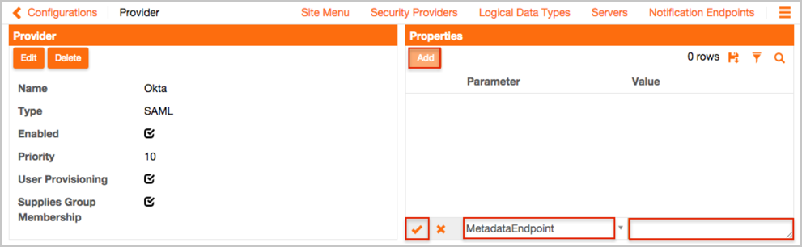
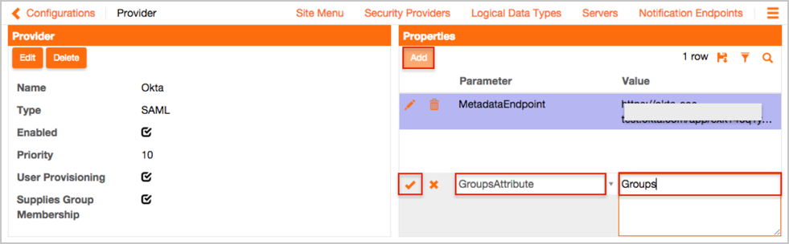
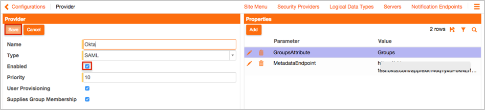
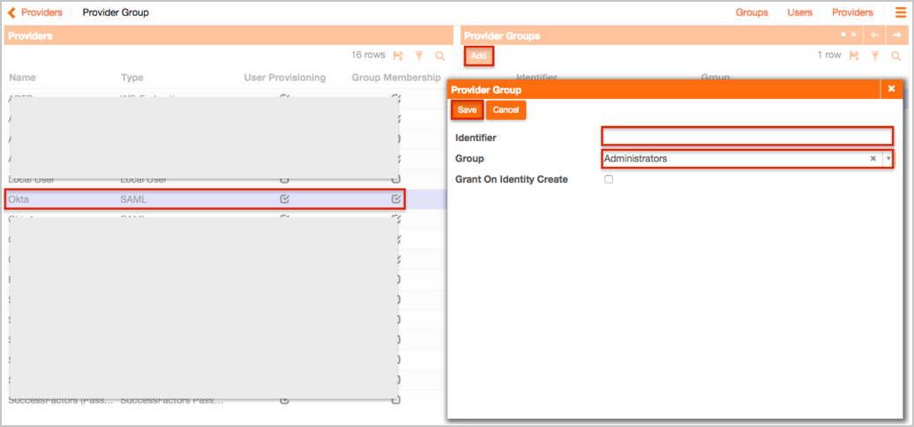
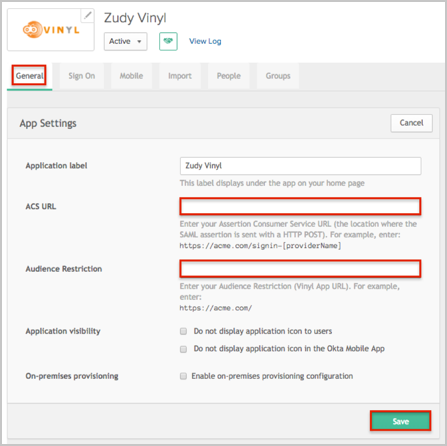
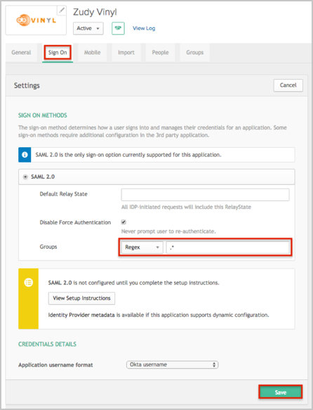
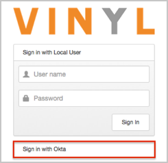

The Zudy Vinyl application is pre-configured to pass Groups as part of the SAML assertion. In order to be able to send Groups, your Okta organization needs to have the following feature flag turned on:
SAML_GROUP_ATTRIBUTE
Once this feature flag is turned on, make sure that the Group option is available for the application (Sign On tab):

Login to Zudy Vinyl as an Administrator.
Navigate to Vinyl Configuration > Security Providers.
In the Providers section, click Add.

On the new page, in the Provider section, enter the following:
Name: Enter Okta.
Type: Select SAML.
Priority: Enter 10. Note that this value must be a unique integer between 10 and 100.
Check User Provisioning to enable Just In Time (JIT) user provisioning.
Check Supplies Group Membership to indicate that Okta has been configured to pass user group membership.

In the Properties section, enter the following:
Click AddMetadataEndpoint parameter from the dropdown list.
Copy and paste the following Metadata URL.
Check the Save icon (check mark).

Still in the Properties section, enter the following:
Click AddGroupAttribute parameter from the dropdown list.
Enter Groups for the value.
Check the Save icon (check mark).

In the Provider section:
Click the Edit button
Check the Enabled option.
Click the Save button.

Navigate to Vinyl - User Management > Providers.
Enter the following:
In the Providers panel, select Okta as the security provider.
In the Provider Groups panel, click Add.
In the Identifier field, enter a group name (which will be sent from Okta).
In the Group field, enter the corresponding Vinyl Group (LAdministrators in our example).
Click Save.

In Okta, select the General field, tab for the Vinyl app.
Click Edit
Enter your ACS URL. For example if you log into https://acme.com/ and your provider name is Okta (the Name entered in step 4), you need to enter https://acme.com/signin-Okta.
Enter your Audience Restriction. For example if you log into https://acme.com/ just enter https://acme.com/.
Click Save.

In Okta, select the Sign On field, tab for the Vinyl app.
Click Edit
Select your preferred Group filter from the dropdown list. Use the Regex rule with the value ".*" in order to send *all* groups to the Vinyl instance, as shown in our our example).
Click Save.

Done!
Notes:
IdP-initiated flows, SP-initiated flows, and Just In Time (JIT) provisioning are all supported.
For SP-initiated Flows:
Open the Vinyl login page
Click Sign in with Okta.
